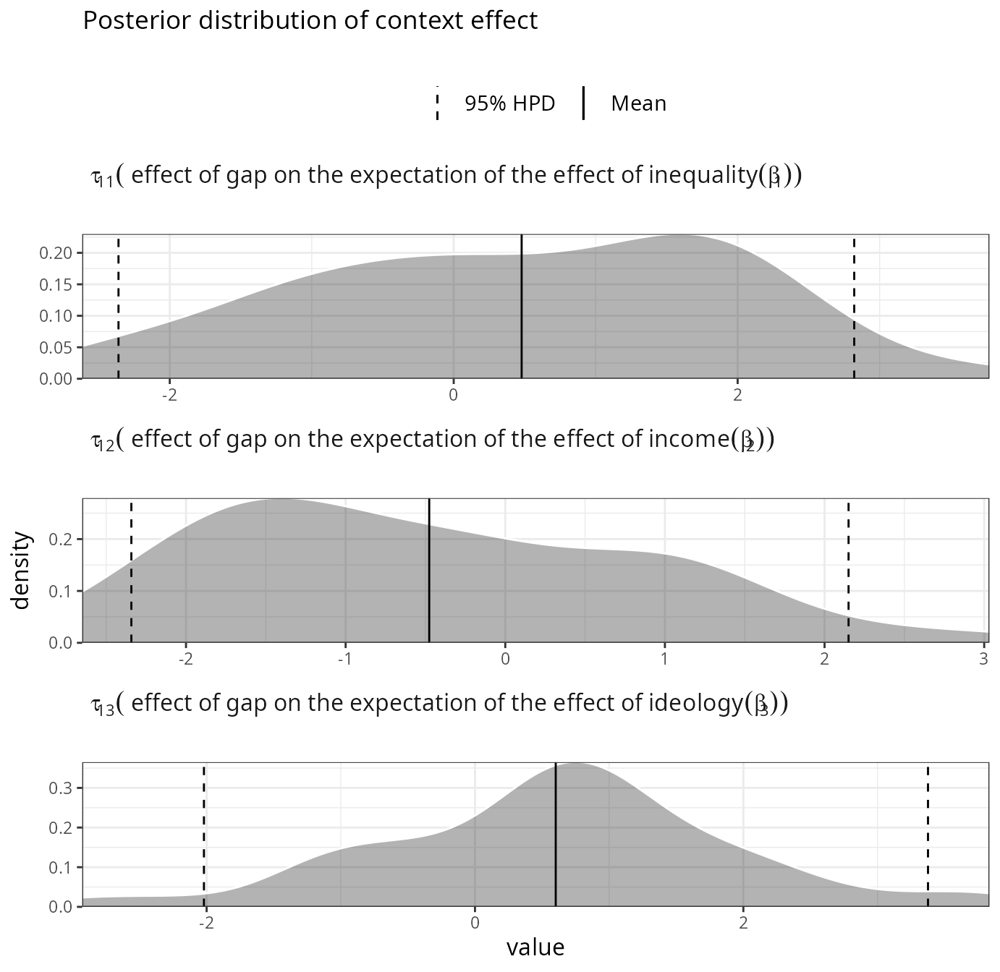
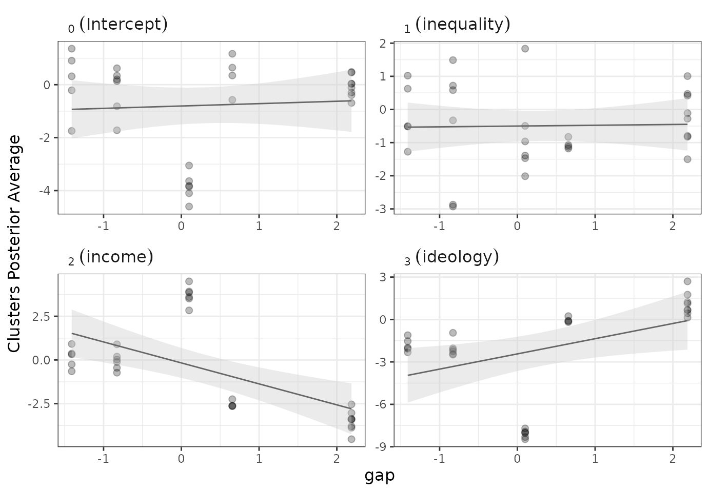

Introduction
The package hdpGLM makes it easy to estimate semi-parametric regression models, and summarize and visualize the results. The package is useful for many purposes:
- Find clusters using semi-parametric Bayesian methods (Dirichlet Process)
- Find a set of generalized linear models (GLM) that apply to different latent subpopulations
- Estimate latent heterogeneity in the marginal effect of regression coefficients
- Investigate if Simpson’s Paradox occurs due to latent or omitted features
- Cluster the data points based on marginal effect heterogeneity
- All the above, but with hierarchical data from many contexts (e.g., schools, hospitals, cities, states, countries, etc.)
- Find the effect of context-level features (upper-level covariates) on the latent heterogeneity of within-context features (lower-level covariates)
Background
The hdpGLM works similarly to linear regression models. It estimates coefficients of linear regressions, including generalized linear models, such as logit coefficients. But it simultaneously searches for latent clusters in the data and estimates the linear coefficients for those clusters. The result of the estimation is \(K\) vectors of linear coefficients, one vector for each cluster. If there are no clusters in the data, it returns the estimated coefficients similar to classical regression models.
The clustering procedure is based on a hierarchical semi-parametric Bayesian model proposed in Ferrari (2020). The model, called Hierarchical Dirichlet process Generalized Linear Models (hdpGLM), can be used to deal with latent heterogeneity in different situations, including those that emerge due to unobserved variables. It deals with the latent heterogeneity in two ways: (1) it finds latent clusters which can be better described by different regression models and (2) estimate the coefficient of those models. The hdpGLM can also be used with hierarchical data to estimate latent heterogeneity in multiple contexts and check if the clusters are context-dependent (see an example in section Estimating Context-dependent latent heterogeneity).
The linear model is estimated by sampling from the posterior distribution using a Gibbs sampler. Non-linear models (e.g., logit with binary outcomes) use Hamiltonian Monte Carlo within Gibbs. The algorithms are presented in Ferrari (2020).
Why should we estimate clusters of linear regressions instead of fitting a single regression model?
First, it improves the predictive performance of the regression model and keeps the interpretability of the regression coefficients. hdpGLM is much more flexible than traditional regression and produces monotonically lower root mean square error (see Ferrari (2020) for details).
Second, latent heterogeneity emerges when there are omitted variables in the estimation of regression models. The hdpGLM can be used to estimate marginal effects even when interactions were omitted. It recovers the linear coefficients of each latent group.
Usage
Estimation
The function hdpGLM estimates a semi-parametric Bayesian regression model. The syntax is similar to other R functions such as lm(), glm(), and lmer().
Here is a toy example. Suppose we are studying how income inequality affects support policies that help alleviate poverty in a given country A. Yet, suppose further that (1) the effect of inequality varies between groups of people; for some people, inequality increases support for welfare policies, but for others, it decreases welfare policy support; (2) we don’t know which individual belongs to which group. The data set welfare contains simulated data for this example.
## loading and looking at the data
welfare = read.csv2('welfare.csv')
head(welfare)
#> support inequality income ideology
#> 1 -18.5649610 0.3392724 0.1425111 1.9225985
#> 2 -9.3905812 -0.9906646 -0.5117102 0.2483346
#> 3 0.9276234 -2.2318510 -0.3856288 -1.3619216
#> 4 -12.3594498 -3.0079501 -0.9440585 -0.2088675
#> 5 -2.4834411 0.1000455 0.8322192 0.1321378
#> 6 -11.4187853 -0.9543883 -0.8810503 0.2916444Now, suppose that inequality increases support for welfare only among women, but it decreases support among men. We didn’t collect data on gender (male versus female). We could estimate the hdpGLM and recover the coefficients even if gender wasn’t observed. The package provides a function called hdpGLM, which estimates a semi-parametric Bayesian generalized linear model using a Dirichlet mixture. Let’s estimate the model. The example uses few iterations in the MCMC, but in real applications, one should use a much larger number.
library(hdpGLM)
#>
#> ## ===============================================================
#> ## Hierarchial Dirichlet Process Generalized Linear Model (hdpGLM)
#> ## ===============================================================
#>
#> Author: Diogo Ferrari
#> Usage : http://www.diogoferrari.com/hdpGLM/index.html
#>
#> Attaching package: 'hdpGLM'
#> The following object is masked _by_ '.GlobalEnv':
#>
#> welfare
## estimating the model
mcmc = list(burn.in=10, ## MCMC burn-in period
n.iter =500) ## number of MCMC iterations to keep
mod = hdpGLM(support ~ inequality + income + ideology, data=welfare,
mcmc=mcmc)
## printing the outcome
summary(mod)
#>
#> --------------------------------
#> dpGLM model object
#>
#> Maximum number of clusters activated during the estimation: 14
#> Numer of MCMC iterations: 500
#> burn-in: 10
#> --------------------------------
#>
#> Summary statistics of clusters with data points
#>
#> --------------------------------
#> Coefficients for cluster 1 (cluster label 1)
#>
#> Post.Mean Post.Median HPD.lower HPD.upper
#> 1 (Intercept) -3.8714657 -3.8726491 -3.9409884 -3.803691
#> 2 inequality 2.0005534 2.0003258 1.9304364 2.066584
#> 3 income 3.8483607 3.8481365 3.7736635 3.921207
#> 4 ideology -8.3037017 -8.3034030 -8.3795892 -8.237106
#> 5 sigma 0.9996877 0.9979384 0.9059047 1.084941
#>
#> --------------------------------
#> Coefficients for cluster 2 (cluster label 4)
#>
#> Post.Mean Post.Median HPD.lower HPD.upper
#> 1 (Intercept) -3.8193291 -3.8182323 -3.8914804 -3.739364
#> 2 inequality -1.5254658 -1.5241162 -1.6019978 -1.457243
#> 3 income 3.8786786 3.8795568 3.8127788 3.951021
#> 4 ideology -8.2589154 -8.2591555 -8.3352574 -8.197083
#> 5 sigma 0.9773662 0.9772002 0.8693291 1.078841
#>
#> --------------------------------The summary function prints the result in a tidy format. The column k in the summary shows the label of the estimated clusters. The column Mean is the average of the posterior distribution for each linear coefficient in each cluster.
The function classify can be used to classify the data points into clusters based on the estimation.
welfare_clustered = classify(welfare, mod)
head(welfare_clustered)
#> Cluster support inequality income ideology
#> 1 1 -18.5649610 0.3392724 0.1425111 1.9225985
#> 2 1 -9.3905812 -0.9906646 -0.5117102 0.2483346
#> 3 1 0.9276234 -2.2318510 -0.3856288 -1.3619216
#> 4 1 -12.3594498 -3.0079501 -0.9440585 -0.2088675
#> 5 4 -2.4834411 0.1000455 0.8322192 0.1321378
#> 6 1 -11.4187853 -0.9543883 -0.8810503 0.2916444
tail(welfare_clustered)
#> Cluster support inequality income ideology
#> 1995 4 -1.5230053 1.055855140 -0.7295937 -0.7067871
#> 1996 4 0.4814892 0.582588091 2.0051082 0.3090389
#> 1997 4 -14.1929956 0.391164197 -0.9607449 0.7765482
#> 1998 4 -8.2396789 0.074437376 1.2020300 1.0874928
#> 1999 1 -23.1583753 0.434223018 -0.6176438 2.0387294
#> 2000 4 -7.2075582 0.008355317 -0.4538951 0.2268072There are a series of built-in functions, with various options, to plot the results. In the example below, you see two of those options. The separate parameter plot the posterior samples for each cluster separately, and the option ncols controls how many columns to use for the panels in the figure (to see more, run help(plot.hdpGLM) and help(plot.dpGLM)).
plot(mod, separate=T, ncols=4)
#>
#>
#> Generating plot...
Estimating Context-dependent Latent Heterogeneity
To continue the previous toy example, suppose that we are analyzing data from many countries, and we suspect that the latent heterogeneity is different in each country. The effect of inequality on support for welfare may be gender-specific only in some countries (contexts). Or maybe the way it is gender-specific varies from country to country. Suppose we didn’t have data on gender, but we collect information on countries’ gender gap in welfare provision. Let’s look at this new data set.
## loading and looking at the data
welfare = read.csv2('welfare2.csv')
head(welfare)
#> support inequality income ideology country gap
#> 1 -18.5649610 0.3392724 0.1425111 1.9225985 0 0.1
#> 2 -9.3905812 -0.9906646 -0.5117102 0.2483346 0 0.1
#> 3 0.9276234 -2.2318510 -0.3856288 -1.3619216 0 0.1
#> 4 -12.3594498 -3.0079501 -0.9440585 -0.2088675 0 0.1
#> 5 -2.4834411 0.1000455 0.8322192 0.1321378 0 0.1
#> 6 -11.4187853 -0.9543883 -0.8810503 0.2916444 0 0.1
tail(welfare)
#> support inequality income ideology country gap
#> 3195 0.3190583 -0.7504798 -0.7839583 0.92300705 4 -0.8280808
#> 3196 -1.3837239 0.6620435 -1.5566268 0.05634618 4 -0.8280808
#> 3197 -1.3820016 -0.4298706 -1.0945688 0.71559078 4 -0.8280808
#> 3198 0.6878775 0.5450604 2.6175887 -1.94844469 4 -0.8280808
#> 3199 -7.9282930 1.7846004 1.6755823 1.29160208 4 -0.8280808
#> 3200 -1.7472485 0.5030992 -0.5395479 0.20109879 4 -0.8280808The variable country indicates the country (context) of the observation, and the variable gap the gender gap in welfare provision in the respective country. The estimation is similar to the previous example, but now there is a second formula for the context-level variables. Again, the example below uses few iterations in the MCMC, but in practical applications, one needs to increase that).
## estimating the model
mcmc = list(burn.in=1, ## MCMC burn-in period
n.iter =50) ## number of MCMC iterations to keep
mod = hdpGLM(support ~ inequality + income + ideology,
support ~ gap,
data=welfare, mcmc=mcmc)
summary(mod)
#>
#> --------------------------------
#> hdpGLM Object
#>
#> Maximum number of clusters activated during the estimation: 1
#> Numer of MCMC iterations: 50
#> Burn-in: 1
#>
#> Number of contexts : 5
#>
#> Number of clusters (summary across contexts):
#>
#> Average Std.Dev Median Min. Max.
#> 1 5.8 1.30384 5 5 8
#> --------------------------------
#>
#>
#> Summary statistics of clusters with data points in each context
#>
#> --------------------------------
#> Coefficients and clusters for context 1
#>
#> Post.Mean Post.Median HPD.lower HPD.upper Cluster
#> 1 (Intercept) -3.8691486 -3.8677277 -3.9317384 -3.8028867 1
#> 2 inequality 1.8572635 1.9723704 0.3701819 2.1128131 1
#> 3 income 3.8684303 3.8678467 3.8094518 3.9593933 1
#> 4 ideology -8.3337143 -8.3265556 -8.4113724 -8.2579189 1
#> 5 (Intercept) -3.8838981 -4.0436776 -4.3945020 -3.0875923 3
#> 6 inequality 1.9447127 1.7012563 1.3604077 3.3998124 3
#> 7 income 4.8990707 4.8160991 4.4604110 5.5971629 3
#> 8 ideology -7.1033860 -7.0553234 -7.8293354 -6.7414286 3
#> 9 (Intercept) -3.7153994 -3.7111308 -3.8544582 -3.4682348 5
#> 10 inequality -1.7127796 -1.7016789 -1.8887122 -1.5995945 5
#> 11 income 3.8908823 3.9170212 3.5403026 4.0820740 5
#> 12 ideology -8.2862354 -8.3023397 -8.4961317 -8.2127732 5
#> 13 (Intercept) -1.5761459 -1.7543487 -2.7112219 1.4165447 7
#> 14 inequality -0.6075125 -0.6166066 -1.1661250 0.1292782 7
#> 15 income 3.1254454 3.2621091 2.2328930 3.7288342 7
#> 16 ideology -6.8017677 -7.1393259 -8.0906265 -3.8284329 7
#> 17 (Intercept) -4.5401229 -4.0133279 -6.6431063 -3.7656886 9
#> 18 inequality -0.7975913 -1.3681130 -1.5226403 1.3218476 9
#> 19 income 3.3773827 3.8280258 1.4977067 4.0056551 9
#> 20 ideology -7.6955496 -8.1496245 -8.3111966 -3.9722123 9
#>
#> --------------------------------
#> Coefficients and clusters for context 4
#>
#> Post.Mean Post.Median HPD.lower HPD.upper Cluster
#> 1 (Intercept) 0.17676250 0.17288753 0.06786528 0.32057505 1
#> 2 inequality -1.16417841 -1.17386088 -1.28738349 -1.05128599 1
#> 3 income -2.62197857 -2.65490275 -2.74894948 -2.47972794 1
#> 4 ideology -0.09635996 -0.07998361 -0.28382959 0.04573722 1
#> 5 (Intercept) 0.97543076 0.94460491 0.68283623 1.53289463 2
#> 6 inequality -0.93631248 -0.95258268 -1.17981640 -0.69206364 2
#> 7 income -2.23369431 -2.45897054 -2.67470977 -1.95060768 2
#> 8 ideology -0.23312620 -0.31240089 -0.48148471 0.24953273 2
#> 9 (Intercept) -1.01740353 -0.98673051 -1.24342487 -0.66275912 3
#> 10 inequality -1.25575996 -1.25706801 -1.44149898 -1.05238893 3
#> 11 income -2.25911847 -2.27396814 -2.66235655 -1.98865013 3
#> 12 ideology -0.25490150 -0.25030628 -0.57721146 -0.06739714 3
#> 13 (Intercept) -0.30045284 -0.28616407 -0.68974396 0.08508223 4
#> 14 inequality -1.02500906 -1.03763303 -1.32535346 -0.74614004 4
#> 15 income -2.10465838 -2.11764743 -2.56871856 -1.73692957 4
#> 16 ideology 0.26354588 0.22948666 0.04828375 0.60100828 4
#> 17 (Intercept) -0.14518443 -0.07861976 -0.59821741 0.18224460 5
#> 18 inequality -1.26635235 -1.28146163 -1.67993619 -0.98265583 5
#> 19 income -2.79195933 -2.84451891 -3.05840214 -2.60594812 5
#> 20 ideology -0.48196099 -0.50379396 -1.11216045 0.02684259 5
#> 21 (Intercept) -0.15139195 -0.08755979 -0.82145053 0.32374937 6
#> 22 inequality -1.51665084 -1.34283852 -2.38536286 -0.94057238 6
#> 23 income -3.45379267 -3.42849762 -3.73671854 -3.05479385 6
#> 24 ideology 0.32187162 0.54100111 -0.58710337 0.94140028 6
#> 25 (Intercept) 0.79902372 1.04989742 -1.30788815 1.96491760 7
#> 26 inequality -0.12714421 -0.64147338 -1.19583552 5.53720903 7
#> 27 income -3.05183147 -3.50077828 -6.39736779 0.81985863 7
#> 28 ideology -0.82811075 -0.52324498 -4.53580283 0.40022396 7
#> 29 (Intercept) 0.60705225 0.85693781 -0.95381157 2.08055623 8
#> 30 inequality -0.95584833 -0.96880533 -2.31320845 0.75725681 8
#> 31 income -1.93796878 -2.06588358 -3.53701738 0.56348165 8
#> 32 ideology 0.08618603 0.04528429 -1.21411209 1.35628771 8
#>
#> --------------------------------
#> Coefficients and clusters for context 2
#>
#> Post.Mean Post.Median HPD.lower HPD.upper Cluster
#> 1 (Intercept) 1.67479600 1.415211168 1.0581926 3.74313982 2
#> 2 inequality 0.78277032 0.884627921 -0.2788658 1.30408963 2
#> 3 income 0.89384429 0.875372002 0.6090348 1.34595069 2
#> 4 ideology -2.07275976 -1.855912499 -4.0898826 -1.49981793 2
#> 5 (Intercept) 0.79337396 1.125280248 -2.9945613 3.55177595 3
#> 6 inequality 1.37071138 2.459151719 -3.5129613 5.13723665 3
#> 7 income 0.36773516 0.080366101 -3.7171086 7.17338403 3
#> 8 ideology -2.53563412 -2.681784943 -5.7168872 -0.15771001 3
#> 9 (Intercept) 0.72155228 0.923436239 0.0254056 1.57290548 4
#> 10 inequality -0.05395425 0.005435634 -0.8023076 0.50158841 4
#> 11 income 0.15755351 0.203699603 -0.3884543 0.83771211 4
#> 12 ideology -1.45166647 -1.355886861 -3.4258981 -0.11660923 4
#> 13 (Intercept) -1.66627979 -1.669807751 -1.9173291 -1.28821102 5
#> 14 inequality -0.37207001 -0.451312918 -0.6369271 0.04977276 5
#> 15 income 0.35513894 0.325143787 0.1088124 0.63353753 5
#> 16 ideology -1.99405608 -2.038059511 -2.2757063 -1.32307832 5
#> 17 (Intercept) -0.22532090 -0.172609551 -0.6156275 0.01958949 6
#> 18 inequality -1.15073691 -1.220684525 -1.4728475 -0.35560105 6
#> 19 income -0.59035364 -0.595316492 -0.8756050 -0.32579345 6
#> 20 ideology -2.03482279 -2.250274071 -2.4096874 0.11327415 6
#> 21 (Intercept) 1.38626489 1.571637990 -2.6477220 4.45208956 7
#> 22 inequality 0.02238204 -0.057662717 -4.2624059 5.95642783 7
#> 23 income 2.13002367 2.536470238 -3.4807882 5.56484158 7
#> 24 ideology -2.22934508 -2.129339393 -7.7649972 2.79895524 7
#>
#> --------------------------------
#> Coefficients and clusters for context 3
#>
#> Post.Mean Post.Median HPD.lower HPD.upper Cluster
#> 1 (Intercept) 0.8847837 0.8670887 0.4440868 1.64536474 2
#> 2 inequality -0.7201473 -0.7261880 -1.4315934 -0.06502692 2
#> 3 income -3.2330669 -3.2074960 -3.7517981 -2.81656389 2
#> 4 ideology 1.4047089 1.3258900 0.9992620 2.07561204 2
#> 5 (Intercept) -0.1560542 -0.1670984 -0.3567996 0.06752777 3
#> 6 inequality 0.4220560 0.4961143 -0.3965719 0.68384657 3
#> 7 income -2.6478884 -2.6612192 -2.8985058 -2.44966827 3
#> 8 ideology 2.5336330 2.5332857 2.2417808 2.83275934 3
#> 9 (Intercept) -0.2318789 -0.2631560 -0.5590538 0.24849847 4
#> 10 inequality -0.6318494 -0.5938524 -1.2534524 -0.34594583 4
#> 11 income -4.1415378 -4.1679740 -4.4028476 -3.61067586 4
#> 12 ideology 0.6081997 0.6554321 0.4139409 0.94958909 4
#> 13 (Intercept) -0.8243996 -1.1429427 -2.4568882 4.04187778 6
#> 14 inequality -0.4702054 -0.7751497 -3.1114149 6.02576715 6
#> 15 income -2.9572295 -3.1089226 -4.4376228 0.32281265 6
#> 16 ideology 0.6768684 0.5059511 -2.3519760 4.07032118 6
#> 17 (Intercept) -0.3518338 -0.2648008 -1.1389038 1.84822410 7
#> 18 inequality 1.6318904 1.6933652 1.0811604 3.01500451 7
#> 19 income -3.5868551 -3.5963558 -5.4360496 -2.88423876 7
#> 20 ideology 1.0447280 1.1474427 -0.7982967 4.00430864 7
#>
#> --------------------------------
#> Coefficients and clusters for context 5
#>
#> Post.Mean Post.Median HPD.lower HPD.upper Cluster
#> 1 (Intercept) 0.14378125 0.10355586 -0.1863741 0.45337486 3
#> 2 inequality -2.73914198 -2.71233628 -3.2110295 -2.45038944 3
#> 3 income 0.02808539 0.03373023 -0.2073585 0.34784213 3
#> 4 ideology -2.34434050 -2.34533103 -2.5661062 -2.14748562 3
#> 5 (Intercept) -0.49384541 -0.28725043 -3.1658199 0.10961552 6
#> 6 inequality 0.19457663 0.34583484 -2.5186260 0.66689875 6
#> 7 income -0.24181767 -0.57169428 -0.8569157 3.27714872 6
#> 8 ideology -1.19576197 -1.22066761 -1.9053752 -0.64169451 6
#> 9 (Intercept) 0.09163964 -0.05401084 -0.3562889 1.24751399 7
#> 10 inequality 1.15636172 1.11504869 0.8127114 1.90153849 7
#> 11 income -0.34901827 -0.27650570 -1.0691483 0.16918513 7
#> 12 ideology -2.32895385 -2.25242046 -3.2532401 -1.86638722 7
#> 13 (Intercept) -0.97563876 -0.89174589 -3.1299880 0.02380299 8
#> 14 inequality -1.90303703 -1.93124827 -3.2614347 -0.06421927 8
#> 15 income -0.10974005 0.02609806 -4.7503304 0.79137900 8
#> 16 ideology -1.76756682 -1.95284365 -3.6906910 -1.11937194 8
#> 17 (Intercept) 0.63445814 0.43454385 0.1740331 1.71298041 9
#> 18 inequality -3.26190011 -3.38805920 -3.6553124 -2.25720779 9
#> 19 income -0.76760586 -0.96699265 -1.2775367 0.86440020 9
#> 20 ideology -2.27141841 -2.22826003 -3.3879884 -1.67059792 9
#>
#> --------------------------------
#> Context-level coefficients:
#> Description Post.Mean HPD.lower HPD.upper
#> 1 Intercept of beta[0] -0.22175967 -2.1266806 1.6908866
#> 2 Intercept of beta[1] -0.01460373 -2.0393068 2.1166829
#> 3 Intercept of beta[2] -0.27531666 -2.7087252 2.2909802
#> 4 Intercept of beta[3] -1.43345634 -4.8102580 0.7758202
#> 5 Effect of gap on beta[0] -0.10358190 -1.7462992 1.9123287
#> 6 Effect of gap on beta[1] -0.07384572 -2.3858689 2.3060910
#> 7 Effect of gap on beta[2] -1.02872683 -2.7506855 0.8393976
#> 8 Effect of gap on beta[3] 0.63585838 -0.8388172 2.8267613
#>
#> --------------------------------The summary contains more information now. As before, the column k indicates the estimated clusters. The column j indicates the country (context) of the estimated value for the respective cluster’s coefficient. The second summary ($tau) shows the marginal effect of the context-level feature (gap). Details of the interpretation can be found in Ferrari (2020).
There are a series of built-in functions to visualize the output. The function plot_tau() displays the estimation of the effect of the context-level variables.
plot_tau(mod)
The function plot_pexp_beta() displays the association between the context-level features and the latent heterogeneity in the effect of the linear coefficients in each context. The paramter ‘smooth.line’ plots a line representing the linear association between the context-level feature (gap) and the posterior averages of the marginal effects in each cluster. The parameter ncol.beta controls the number of columns in the figure for the panels. For more options, see help(plot_pexp_beta)
plot_pexp_beta(mod, smooth.line=TRUE, ncol.beta=2)
#>
#>
#> Generating plots ...
#> Warning: `guides(<scale> = FALSE)` is deprecated. Please use `guides(<scale> =
#> "none")` instead.
#> `geom_smooth()` using formula 'y ~ x'
#> `geom_smooth()` using formula 'y ~ x'